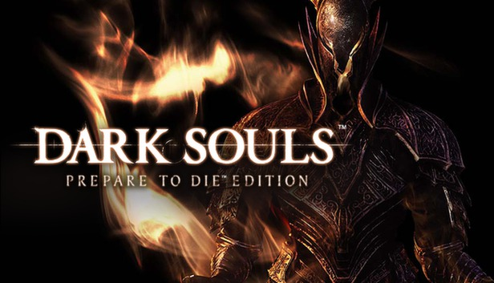

¿Que es Dark Souls?
Se trata de uno de los videojuegos que más impacto generó en la industria, generando
un género completamente nuevo y revolucionario, los "Souls-like".

Es un videojuego del género RPG de acción en tercera persona con temática de fantasía oscura
en el que encarnamos a un no muerto maldito con la misión de explorar un reino ficticio
llamado Lordran y descubrir el destino de los no muertos
¿Qué hace especial a Dark Souls?
El arte, historia, mecánicas y, por sobre todo, la dificultad son las cosas que más resaltan en este juego
y las que más atraen a nuevos jugadores (como se puede ver en la edición "prepare to die")
